Note: These project repositories are on both my school's GitHub profile and my personal GitHub, and due to my school's restrictions, I cannot show the repositories for some projects.
Front-end development
Functional programming (OCaml)
all projects:
Front-end development
Personal website:
Skills: HTML, CSS, Javascript, GitHub pages
-
Designed personal website for front-end development/design practice
-
Leveraged Javascript to create interactive website
-
Hosting site via GitHub pages
-
Looking to refactor into AngularJS app and shift to different host like AWS Beanstalk
Details:
This website is my personal website to showcase my CS portfolio and skills and other personal interests in my blog. I'm currently using GitHub pages to host this website. For the future, I plan on refactoring this into an AngularJS app and moving to Heroku or AWS Beanstalk to include dynamic features, custom routing, and more.
Server-Side Rendered Plant Catalog Backed by a Database:
Skills: PHP, SQL, HTML, CSS, Docker
- Designed plant catalog website and stored plant data in database
- Created custom routing and other server-side tasks with PHP
- Coded SQL queries for filtering and sorting options for browsing
- Created 'sticky' forms for user to add to plant catalog via SQL queries
- Coded forms to recall user's input and provide feedback for incomplete submissions
This project is a website that displays a plant catalog, intended for an audience to find suitable plants for children to play with. The data for each plant is stored in a database, and users can apply filters or sorting methods to browse through the plant catalog. SQL queries were used to support those filter/sort options, and PHP was used to support custom routing and server-side rendering.
The website also includes a form for adding a new plant to the catalog. If the requirements of the form are incomplete after submission, the user's original inputs remain, and the form provides corrective feedback. SQL queries were used to add this plant to the database.
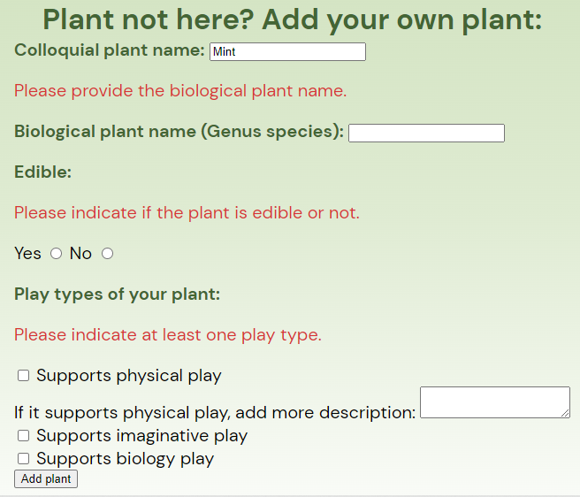Functional Programming (OCaml)
Interpreter for non-trivial programming language:
Skills: OCaml, OUnit testing, CMake
- Constructed syntax and interpreter of 'robot programming language' (RML)
- Implemented Abstract Syntax Tree to parse characters into keywords/tokens
- Implemented evaluator of interpreter to allow execution of RML programs
- Leveraged promises and concurrent programming for RML's own asynchronous expressions
- Unit tested code with OCaml's OUnit test framework
Background information on interpreters: In order to implement a programming language, implementing the compiler or interpreter is necessary so that the computer is able to understand and execute the source program in that language. Compilers/interpreters go through multiple phases when translating a language: lexing, parsing, semantic analysis, then evaluation. Lexing converts the source program into tokens like keywords, then parsing uses those tokens to construct an Abstract Syntax Tree (AST), which describes the structure of the program. Semantic analysis then checks whether the code written is valid, and finally, the program is executed/evaluated.
In this project, the AST was implemented to allow the lexer and parser to create the AST, and the evaluator was also implemented to actually execute programs with this language. Shown in the images are the language's REPL (read-evaluate-print-loop) that supports basic operations along with more complex expressions like variable assignment, anonymous functions and more.
Basic operations:
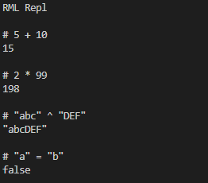Complex expressions:
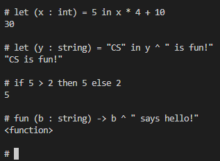Interactive Pokemon Game:
Skills: OCaml, JSON, OUnit test, CMake, ANSITerminal
- Created Pokemon-based game, where player travels along a map and tries to catch and fight wild Pokemon
- Parsed Pokemon JSON file and stored information in OCaml's record data structures
- Generated make-shift GUI using the terminal to display map
- Created modules to organize and design game's system
This Pokemon game allows users to interact, catch, and fight wild Pokemon, with the goal of leveling up their own Pokemon to fight stronger Pokemon. Collaborating with a group, I was able to design the game's system through modules to address game features we wanted to include. For example, a Map module was created to handle all the functions and interactions with the map in the game. In addition to modular design, we leveraged a pre-made JSON file storing Pokemon data to construct our Pokemon.
Example of Pokemon battle:
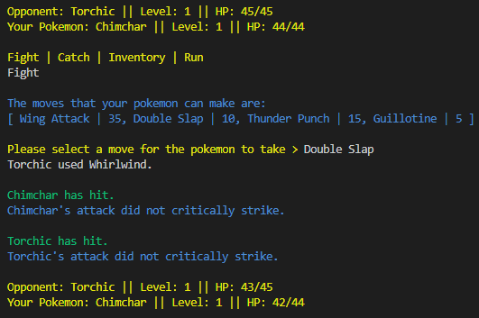Map of game & Pokemon encounter:
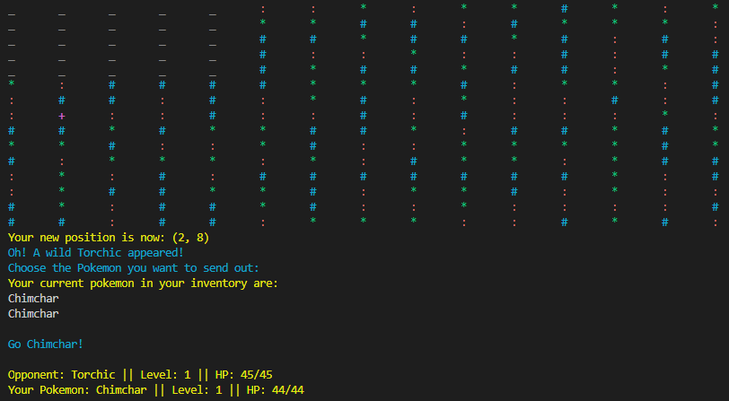Catching a Pokemon:
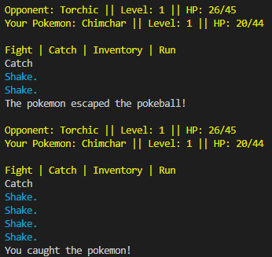Challenges:
A major portion of the game is the Graphical User Interface (GUI), and due to time constraints for the project, we decided to do a terminal-based map as a work-around, allowing the player to explore the map more. Another challenge we encountered was issues with mutability; for instance, if a Pokemon lost health during a battle, the Pokemon's health would return to its original value after the battle. So maintaining effects after changes were made to Pokemon was one issue we often encountered.
Search Engine using Functors and Red-black trees:
Skills: OCaml, Functors, OUnit Testing
- Created search engine to query for words in directories with text files
- Constructed dictionary interface using Red-black trees and OCaml association lists to observe differences in performance
- Designed a set data structure interface using a functor that required dictionary data structure to construct the set
- Leveraged functors for OUnit testing and OCaml's 'Bisect' tool for analyzing tests' code-coverage
Details:
This search engine returns the names of text files that include the words in the provided query. Different queries can be entered to obtain results; the "and" query followed by some words will look for files that contain all words in the query, while the "or" query will look for files that contain any of the words in the query. The queries can also include "not" words, in which if files contain the words of the "not" query, they will be excluded from the search result.
In building the search engine, a dictionary interface was created using both an OCaml association list (linked list) approach and a tree-based approach. The association list approach uses keys and values to create the dictionary and leverages OCaml's higher order functions like "fold_left" or "map" to satisfy required dictionary functions. The tree-based approach uses a "Leaf" type and a "Node" type, containing the node's color (red or black), key-value pair, and a left child and right child. This tree-based approach for the search engine yields better performance due to the logarithmic performance it provides in its operations.
Use of functors to create the engine:
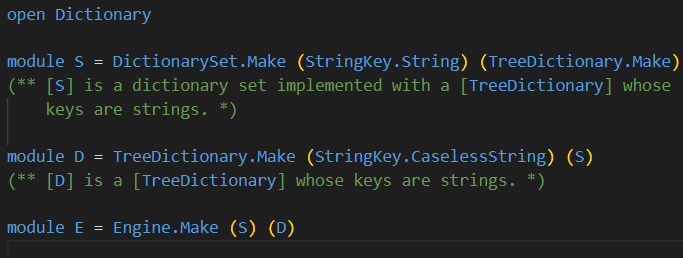Organized unit tests with modules:
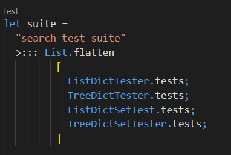Code coverage using bisect:
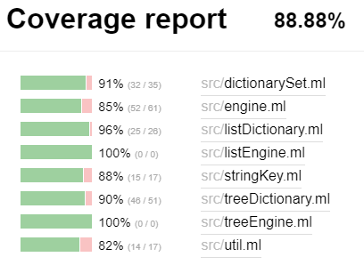C++/C
Handwriting recognition model with multi-threading:
Skills: C++, Python, Linux, CMake, Git
- Implemented supervised model that classified images of handwritten digits from a dataset by comparing the image's intensity to the training set's intensities.
- Organized binary tree and vector data structures via classes, and ptimized methods using function inlining, memoization, and reduction of overall overhead. Used flame graphs to guide optimizations.
- Binary, linear, and multi-threaded search algorithms were implemented for classification.
- Analyzed performance and accuracy of each algorithm then characterized measured data with complexity analyses done in big-O notation.
- Used bash scripts to automate evaluations and Python to visualize the results to compare data.
Details:
This involved creating four supervised learning models that
train and classify images of handwritten digits; HRSLinearSearch,
HRSBinarySearch, HRSTreeSearch, and the alternative system (Parallel
Linear Search) all rely on the generic resizable Vector and generic
sort algorithm, class Image, and generic Tree data structure.
HRSLinear, HRSBinary, and the alternative store a Vector as their set of
training data and each use different implementations to classify the
set of images passed in.
Graph comparing accuracy and execution times of each model:
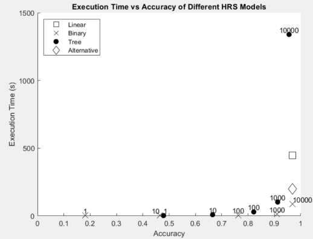HRSLinear uses a linear search algorithm
and HRSBinary sorts then uses a binary search. The concurrent
alternative system creates a thread for each partition of the
training data then performs a linear search per partition.
HRSTreeSearch stores the training data in a Tree and
classifies an Image by using intensity to search and traverse
through the tree and at a certain level determined by a K parameter, performs
an exhaustive search using an image's distance to compare for that subtree.
Sorting algorithms' implementation and performance analysis:
Skills: C++, Linux, CMake, Git
- Implemented insertion, selection, merge, quick, and bucket sort, and tested via directed tests and random tests.
- Quantitatively evaluated each algorithm by inputting variable-length arrays and graphed measured execution times
- Recorded memory usage (auxiliary heap space usage) for each test for further analysis
- Leveraged bash scripts to automate testing and analyses
- Performance and memory usage were characterized via complexity analyses.
Details:
This project investigates different sorting algorithms, selection sort, merge sort, quick sort, and bucket sort, and the respective performance and heap space usage differences between each of them. This is to provide insight into which algorithm may perform better in certain situations; for instance, if memory resources are limited, one would opt to use a memory-efficient sorting algorithm. The graphs on the side display the average execution times and heap space usage for each algorithm given an input array size to sort (number of elements).
Analysis:
Complexity analyses in terms of time and auxiliary heap space usage were also done, providing insight into which algorithm may be preferred over others in certain scenarios. Selection sort and bucket sort demonstrated quadratic time complexity but merge and quick sort had loglinear time complexity. As for space usage, selection and quick sort had constant space usage, while the other two had linear space usage. Quantitative evaluations performed via prewritten evaluation programs were also used to plot execution times and auxiliary heap space usage for different array sizes for each of the sorting algorithms, which visualized the differences between algorithms and solidified individual drawbacks or advantages. From the analyses and evaluations, merge sort and quick sort seem to be the ideal sorting algorithms given their average loglinear performance and space usage.
Table showing data collected on each sorting algorithm:
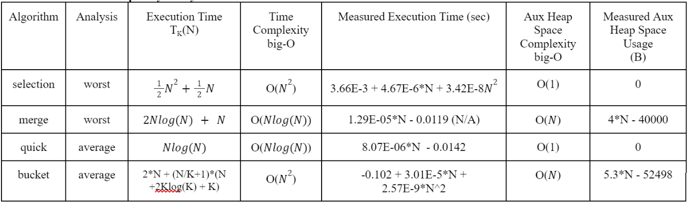Java
Search-and-retrieve game using Hashmaps:
Skills: Java, JUnit, Java Swing
- Game involved searching for a ring in the smallest number of steps in a randomized maze then upon retrieval, returning to the exit collecting as many coins as possible.
- Leveraged HashMaps, Sets, and other built-in Java Collections to store information about neighboring nodes and their distances to the exit and ring
- Implemented and tested depth-first search based algorithms to explore maze
- Implemented Dijkstra's shortest path algorithm to calculate shortest path from current location to exit.
Details:
This project involved developing algorithms that drove a small search-and-retrieve type game, in which a character must first 'search' for a ring in a maze then upon retrieval, the character must return to the exit of the maze while collecting the maximum number of coins that they can. The algorithms that powered the character's movements were all tree-based algorithms and each relied on data structures to store information.
This involved splitting the project up into two phases: a 'seek' phase and a 'scram' phase, where the character first must find the ring then run out of the maze. The 'seek' phase's problem mainly dealt with developing an algorithm that found the ring in the shortest number of steps in order to maximize the character's score; the more steps they took to find the ring meant a smaller score multiplier. Similarly, the "scram" phase required maximizing the number of coins collected while exiting and exiting within the prescribed number of steps. Each of these algorithms relied on a depth-first-search (DFS) algorithm and the "scram" phase implemented Dijkstra's algorithm once the character reached a threshold number of steps.